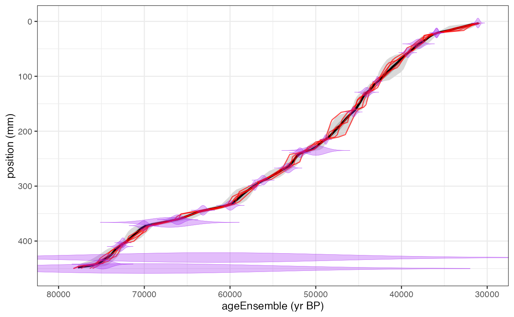
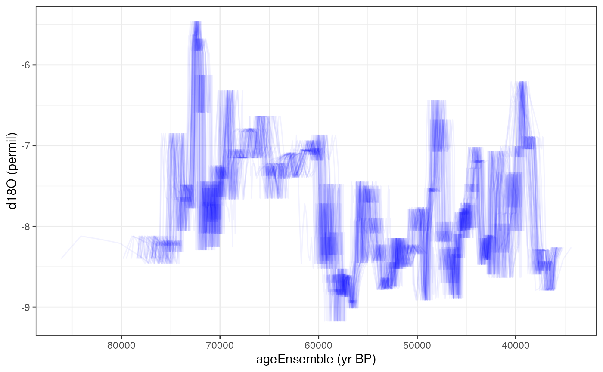
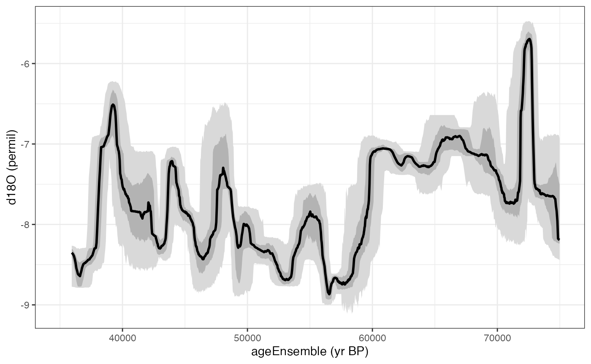
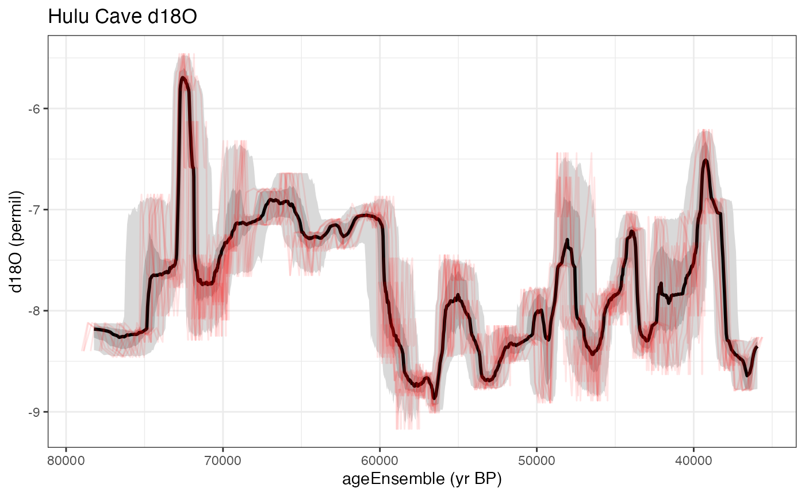
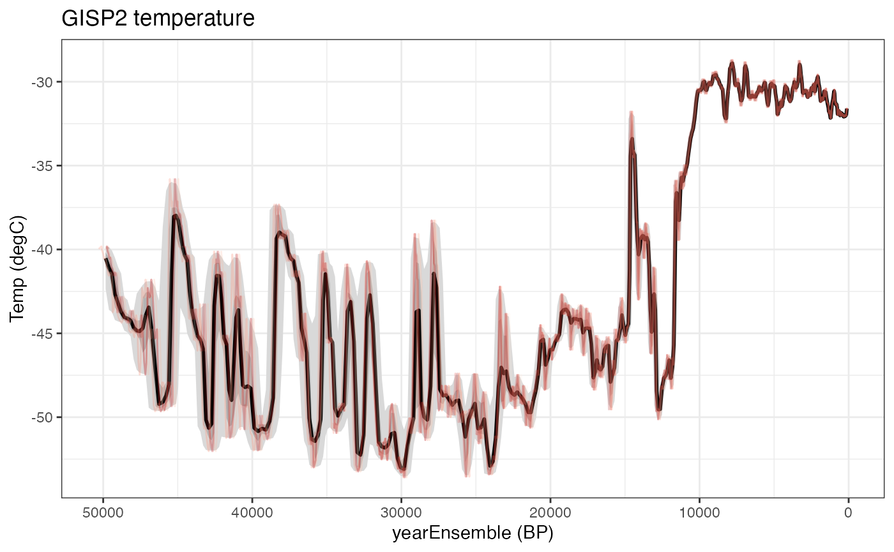
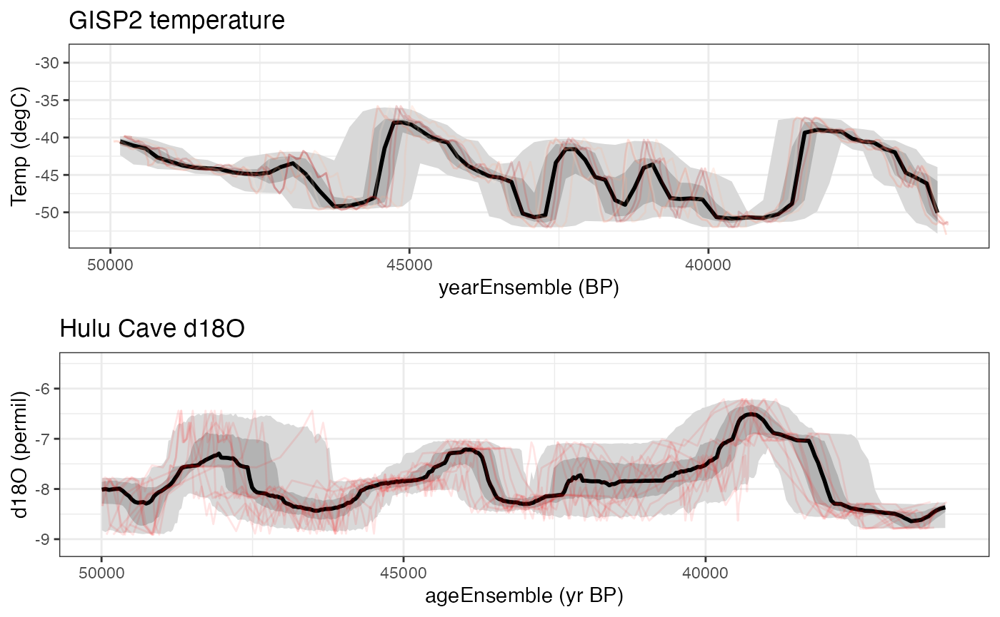

This is the introductory vignette that showcases the functionality of geoChronR to solve real problems with age uncertain data. Here is a table of contents of the other guides included here:
Almost always, your geoChronR work flow will start with loading in a valid LiPD file. So you’ll want both the geoChronR and lipdR libraries
In this case, we’re going to load in the Wang 2001 Hulu Cave dataset that came a long with the package. If you have the lipdR package, you can load a LiPD file directly from your computer, use L <- readLipd() to interactively select a file (or a directory), or enter the path to file or the directory that you want: L <- readLipd("~/Downloads/my.lpd")
hulu <- lipdR::readLipd("http://lipdverse.org/geoChronR-examples/Hulucave.Wang.2001.lpd")## [1] "reading: Hulucave.Wang.2001.lpd"Data from five stalagmites are stored in this file. Age model output, including ensemble data, can be stored in LiPD files, but we don’t have that for this record. For this example we’re going to use the original U/Th dates to create a new a model using BChron.
We’re going to specify many of the parameters here for simplicity, but you can run this with just:
hulu <- runBchron(L)
and it will prompt you for the details.
hulu <- runBchron(hulu,
cal.curves = "normal",
iter = 10000,
extractDate = 10000,
meas.table.num = 2,
lab.id.var = NULL,
age.var = 'age',
age.uncertainty.var = 'ageUncertaintyHigh',
age.14c.var = NULL,
age.14c.uncertainty.var = NULL,
depth.var = 'depth',
reservoir.age.14c.var = NULL,
reservoir.age.14c.uncertainty.var = NULL,
rejected.ages.var = NULL)
#correct units and rename
hulu$chronData[[1]]$model[[1]]$ensembleTable[[1]]$depth$units <- "mm"
hulu$chronData[[1]]$model[[1]]$ensembleTable[[1]]$depth$variableName <- "position"OK, let’s take a look at the model.
chronPlot <- plotChronEns(hulu,truncate.dist = 1e-6)+ggtitle(NULL)+coord_cartesian(xlim = c(80000,30000))
print(chronPlot)
plotChron() is a wrapper for multiple plotting functions, and has a lot of options, which probably require tinkering to produce a nice plot. See all the options by running ?plotChron
The ensemble chronology in a chronModel may or may not have values corresponding to the paleoclimatic or paleoenvironmental measurements in paleoData. To map the model ensemble values to a measurement table in paleoData, use
hulu <- mapAgeEnsembleToPaleoData(hulu,age.var = "ageEnsemble",paleo.meas.table.num = 2)Let’s take a look at the this timeseries.
First we’re going to pull out the age ensemble and d18O data for future reference. The selectData() function makes this easy.
hulu.ae <- selectData(hulu,var.name = "ageEnsemble",meas.table.num = 2)## [1] "Found it! Moving on..."
hulu.d18O <- selectData(hulu,var.name = "d18O",meas.table.num = 2)## [1] "Found it! Moving on..."This might be a good time to take a peak at the data, lets plot the ensemble of lines for these
Here we will just plot 50 the data with 50 of its ensemble members.
hulu.ts.plot <- plotTimeseriesEnsLines(X = hulu.ae,Y = hulu.d18O,alp = 0.05,n.ens.plot = 50,color = "blue")
print(hulu.ts.plot)
We can also plot this as a ribbon plot of quantiles
hulu.ts.plot <- plotTimeseriesEnsRibbons(X = hulu.ae,Y = hulu.d18O,n.bins = 1000)+xlim(c(35000,75000))
print(hulu.ts.plot)
Or a combination of the two with the “add.to.plot option”
hulu.ts.plot <- plotTimeseriesEnsLines(X = hulu.ae,Y = hulu.d18O,alp = 0.1,n.ens.plot = 10,color = "red",add.to.plot = hulu.ts.plot)+ggtitle("Hulu Cave d18O")
print(hulu.ts.plot)
Let’s compare these data to the GISP2 ice core.
gisp2 <- lipdR::readLipd("http://lipdverse.org/geoChronR-examples/GISP2.Alley.2000.lpd")## [1] "reading: GISP2.Alley.2000.lpd"This is an ice core, so the chronology is not based on radiometric tie points. Let’s use BAM (Banded Age Model) to estimate a 2% counting uncertainty on this. Here we specify all the parameters so it runs in non-interactive mode.
gisp2 = runBam(gisp2,
paleo.num = 1,
paleo.meas.table.num = 1,
chron.num = 1,
model.num = 1,
ens.table.number = 1,
make.new = T,
n.ens = 1000,
model = list(name = "poisson",
param = 0.02,
resize = 0,
ns = 1000)
)Because BAM runs off of the data in the paleo measurementTable, it puts the ageEnsemble straight into the paleoData, and we don’t need to run `mapAgeEnsembleToPaleoData()’.
You can also always use selectData(gisp2) in interactive mode, and it will list all of the variables.
gisp2.d18O <- selectData(gisp2,var.name = "temp")## [1] "Found it! Moving on..."
gisp2.ens <- selectData(gisp2,var.name = "yearEnsemble")## [1] "Found it! Moving on..."
gisp2.ens$values[1:10,1:5]## [,1] [,2] [,3] [,4] [,5]
## [1,] 1854.859 1854.859 1854.859 1854.859 1854.859
## [2,] 1842.870 1842.870 1842.870 1842.870 1842.870
## [3,] 1836.851 1836.851 1836.851 1842.870 1836.851
## [4,] 1830.795 1830.795 1830.795 1836.814 1830.795
## [5,] 1830.795 1830.795 1830.795 1836.814 1830.795
## [6,] 1824.549 1824.549 1824.549 1830.568 1824.549
## [7,] 1817.593 1817.593 1817.593 1823.612 1817.593
## [8,] 1811.193 1811.193 1811.193 1817.212 1811.193
## [9,] 1804.874 1804.874 1804.874 1810.893 1804.874
## [10,] 1797.737 1797.737 1797.737 1803.756 1797.737Yep - that’s the first 10 entries of the first five age ensembles.
Hey, it looks like those might be in calendar years instead of years BP. Let’s check the units
gisp2.ens$units## [1] "AD"yep. We’d better convert it to BP for comparison with Hulu.
gisp2.ens <- convertAD2BP(gisp2.ens)Let’s make another ribbon and lines plot, this time useing the magrittr pipe to streamline the process
gisp2.ts.plot <- plotTimeseriesEnsRibbons(X = gisp2.ens,Y = gisp2.d18O,n.bins = 500) %>%
plotTimeseriesEnsLines(X = gisp2.ens,Y = gisp2.d18O,n.ens.plot = 5,color = "Reds",alp = .2)+
ggtitle("GISP2 temperature")
print(gisp2.ts.plot)
Let’s compare the overlapping sections of these records, from about 36 to 50 kyr. We’ll need the gridExtra package for this.
library(gridExtra)
overlap <- c(36000,50000)
grid.arrange(grobs = list(gisp2.ts.plot+xlim(rev(overlap)),hulu.ts.plot+xlim(rev(overlap))),nrow = 2)## Scale for 'x' is already present. Adding another scale for 'x', which will
## replace the existing scale.
## Scale for 'x' is already present. Adding another scale for 'x', which will
## replace the existing scale. Interesting. There’s a hint of a negative relationship during this time interval. In the next vignette we’ll explore ensemble correlation to explore this further. explicitly. Let’s calculate an ensemble correlation and see if shows up.